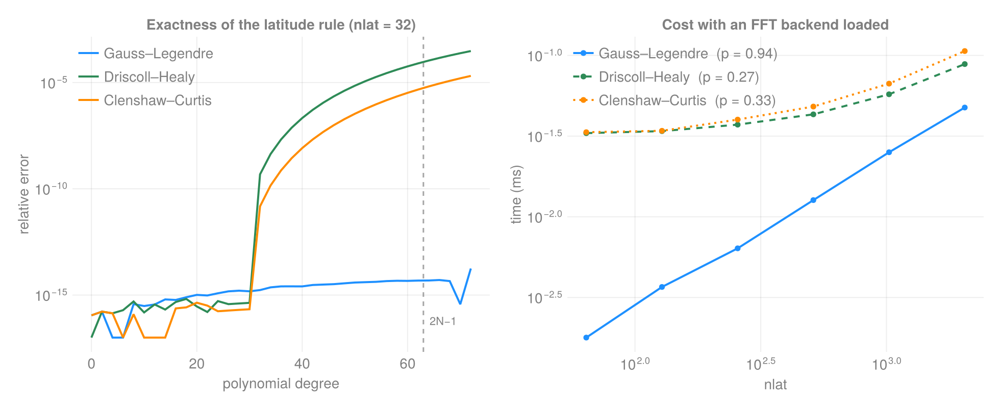

Performance
The design rules, and the measurements behind them.
Rules
- No superlinear algorithm where a linear one exists.
- Intrinsic data is
O(∑ Nᵈ); anythingO(∏ Nᵈ)is a materialization — make it opt-in. - Compute nothing twice, across calls as well as within one.
- One algorithm, one implementation.
- No transcendental in an inner loop that a recurrence,
sincos, or a hoist can remove. - Never compute at runtime what is a mathematical constant.
- An API must not be able to request a terabyte by accident.
Scaling
Every public entry point is linear or better in its problem size. Measured as cost ~ nᵖ across a size step:
| entry point | MiB | allocs | t ~ nᵖ |
|---|---|---|---|
latitude_weights Gauss–Legendre | 0.01 | 3 | 0.99 |
spherical_axes Gauss–Legendre | 0.02 | 6 | 0.96 |
spherical_quadrature Gauss–Legendre | 0.03 | 9 | 0.97 |
latitude_weights Driscoll–Healy | 0.02 | 11 | 0.34 |
latitude_weights Clenshaw–Curtis | 0.02 | 11 | 1.14 |
UnstructuredGrid k-d tree, 40k | 6.23 | 52 | 1.06 |
build_connectivity sampling | 91.48 | 9 | 0.93 |
unstructured_grid cubed sphere | 1.79 | 28 | 1.04 |
unstructured_grid icosahedral | 4.00 | 80 | 1.04 |
unstructured_grid Yin–Yang | 3.76 | 41 | 0.98 |
unstructured_grid HEALPix | 1.22 | 18 | 1.06 |
Allocation counts are flat in n everywhere. build_connectivity's 91 MiB is the CSR output itself for ~2M nodes, not overhead.
Ball queries: nothing per query that belongs to the grid
A ball query has costs that are properties of the grid, not of the query: the smallest step per direction, which bounds the candidate window, the span of each axis, and — where there are no separable axes to bound with — a spatial index. The first two are reduced once when the grid is built and stored as Grids.AxisStats; Connectivity.MetricTopology then reads them in O(1).
The effect is that the per-query default costs nothing, so there is no hoisting to get right. On a stretched axis, with the radius and the window's cell count held fixed:
| axis length | default topology | explicitly hoisted |
|---|---|---|
| 256 | 0.029 µs | 0.029 µs |
| 1 024 | 0.030 µs | 0.030 µs |
| 4 096 | 0.029 µs | 0.029 µs |
| 16 384 | 0.030 µs | 0.029 µs |
Both columns allocate nothing. Before the reductions were cached the default column was a per-query O(N_d) rescan — 15.2 µs at 16 384, growing without bound in the axis length — and every grid with a non-uniform axis paid it, which includes every Gaussian-latitude grid.
A heterogeneous coordinate tuple
Each direction keeps whatever AbstractVector type it was built from, so a grid with a range for longitude and a vector for latitude has a heterogeneous coordinate tuple. Indexing that tuple with a loop variable is a dynamic lookup, and one such loop — a bounds check in _raw_coords — used to defeat inference for every coordinate read:
| on a mixed-axis grid | before | after |
|---|---|---|
coords | 192 B | 0 B |
distance(grid, I, J) | 384 B | 0 B |
nneighbors_within | 9 600 B, 5.3 µs | 0 B, 0.32 µs |
fold_within | 9 600 B | 0 B |
Every per-cell entry point is now allocation-free on every grid shape, and the suite checks that against a matrix of shapes — including mixed-axis ones, which is the case it did not previously have.
Which index
Two are available. Grids.cell_list needs no package, and on a 65 536-cell curvilinear grid it builds faster, queries faster and allocates less than the k-d tree, so it is what the sweeps build by default:
| build | per query | bytes per query | |
|---|---|---|---|
| cell list | 2.75 ms | 1.08 µs | 256 |
k-d tree (NearestNeighbors) | 8.95 ms | 1.25 µs | 672 |
| no index (scan) | — | 646 µs | 0 |
The cell list also enumerates through a fold rather than a returned list, so a query holds no buffer and runs inside a kernel; a tree cannot, because it searches replicated points and has to deduplicate.
Its build is O(n), but only once the dimension reaches the type: taking it from size(pts, 1) — a runtime value — left the construction loop dynamically dispatched at 196 ms and 34 MiB for those 65 536 points, against 2.75 ms and 3 MiB behind a function barrier.
Indexing the architectures with no axes
Curvilinear and node grids have no window to bound, so a query without an index tests every cell. With Connectivity.indexed (needs NearestNeighbors), one query on a 2-D curvilinear grid, radius fixed at 2.5 cells:
| cells | indexed | scanning | speedup |
|---|---|---|---|
| 1 024 | 0.741 µs | 4.892 µs | 6.6× |
| 4 096 | 0.952 µs | 20.045 µs | 21.0× |
| 16 384 | 0.946 µs | 77.308 µs | 81.7× |
| 65 536 | 0.927 µs | 306.059 µs | 330× |
and the whole-grid build, which is n of those queries:
| cells | indexed | scanning | speedup |
|---|---|---|---|
| 1 024 | 0.002 s | 0.010 s | 4.2× |
| 4 096 | 0.011 s | 0.165 s | 14.9× |
| 16 384 | 0.048 s | 2.574 s | 53.6× |
| 65 536 | 0.208 s | 41.519 s | 200× |
O(n log n) against O(n²). The index returns a superset and the exact distance gate still decides membership, so both columns give the same graph — the index buys speed and changes nothing else. Rows come out in whatever order enumerated them, as everywhere else here; sort_neighbors! if you need them ordered.
Because the index cannot be built per query, Connectivity.foreach_within and Connectivity.mapreduce_within exist to build it once for a whole sweep: 800.7 ms → 88.8 ms (9.0×) against the same sweep written as a hand loop over the per-cell entry points, on 9 216 cells.
Connectivity.ball_scratch supplies the candidate buffer, which takes an indexed query to zero allocation whatever the grid size, against 480 bytes on a small ball and 6.1 KB on a 310-candidate one without it.
Quadrature

Gauss–Legendre holds machine precision past degree 2N−1; Driscoll–Healy and Clenshaw–Curtis lose exactness just after N−1, which is the distinction admits_exact_bandlimited_quadrature encodes. The fitted exponents on the right are measured per run, not asserted.
Gauss–Legendre uses asymptotic expansions (Bogaert 2014; Hale & Townsend 2013) above n = 60: each node sits near j_k/(n+½) for j_k a zero of J₀, with corrections in powers of (n+½)⁻². Nothing iterates and no root depends on its neighbours, so it is O(1) per node and allocation-free.
n = 2048 | Golub–Welsch | now |
|---|---|---|
| time | 279.4 ms | 0.05 ms |
| memory | 33.4 MiB | 32 KiB |
Accuracy against a 256-bit reference is ~6e-16 relative weight error at every n from 64 to 4096.
Below n = 60, and for element types wider than Float64, the solve falls back to Newton on the Bonnet recurrence: the expansion's coefficients are a fixed Float64 set and cannot exceed that precision, while Newton converges to eps(T) — BigFloat at 256 bits gives |Σw − 2| = 1.7e-77.
Equiangular (DH/CC) weights are O(n log n) with an FFT loaded and O(n²) without, with the two agreeing to 1.4e-14.
Memory
The two big materializations are gone:
- Cell measure — stored as per-axis factors. At 2000²: 61.0 MiB → 0.046 MiB.
- Curvilinear corner directions — two rows live at a time instead of the whole field. At 1000²: 61.3 MiB → 23.1 MiB, with bit-identical areas.
The factored measure is also faster to read, which was not the expectation. At 2000² the dense array is 61 MiB and DRAM-bound while the factors stay in cache:
| access | factored vs dense |
|---|---|
| full sweep | 0.91× |
| strided, radius 8 | 0.43× |
| strided, radius 32 | 0.40× |
sum | ~6000× |
A memory-bound comparison taken at a size where the dense array still fits in cache measures the cache, not the code. These are taken at 2000² and above for that reason.
Threading
Opt-in through ComputationalBackends tags, serial by default, bit-identical results:
| kernel | speedup (8 threads) |
|---|---|
cubed_sphere_points | 6.2× |
| curvilinear corner areas | 4.9× |
| index-topology connectivity | 3.7–4.3× |
| candidate CSR builder (HEALPix / cubed sphere / Yin–Yang) | 1.8–3.7× |
using ComputationalBackends: ThreadedBackend
FG.Connectivity.build_connectivity(grid; backend = ThreadedBackend())Chunks are contiguous, so each thread touches one span of every array rather than striding across all of them. Passing nothing (the default) hands the loop body the whole range in one call, so the serial path adds no partitioning at all.
Two passes are deliberately not threaded, and the reasons are structural rather than pending work. The CSR compacting move can have row j's destination fall inside row i's source block for i < j, so concurrent rows would overwrite unread candidates. And the prefix scan between the count and fill passes is inherently sequential — it is O(n) against the O(n·stencil) passes it separates.
Things measured and found not to be problems
Recorded so they are not re-litigated:
getpropertycoordinate-name lookup is free — 0.065 vs 0.077 ms per 10⁶ reads; it const-folds.- The dense-mask branch is free in a predictable loop.
- Cross-point SIMD is unavailable —
@simdover 10⁶ haversines is 1.01×; LLVM cannot vectorizesin/cos/atan. Eliminating trig is the only lever, so the geometry kernels usesincosand hoistatanout of loops. - Vector-axis construction is not superlinear — the gap against a uniform axis is a constant factor, not a growing one.
- The ball-query candidate buffer is mostly an allocation win — 1.43× in time on a 20-candidate ball and 1.06× on a 310-candidate one, against zero bytes per query rather than 480 B and 6.1 KB. Worth passing in a sweep; the time it saves is only visible where the ball is small enough that the allocation is most of the query.